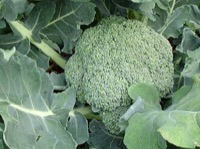

ブロッコリーの生産量 都道府県ランキング
1位から3位までと、とれた量
ブロッコリーが日本でいちばん多くとれるのは北海道です。2万9,700 tで、全国（16万500 t）の19%を占めます。

| 順位 | 都道府県 | 収穫量 | 全国に占める割合 |
|---|---|---|---|
| 1位 | 北海道 | 2万9,700 t | 19% |
| 2位 | 埼玉県 | 1万4,500 t | 9.0% |
| 3位 | 香川県 | 1万3,100 t | 8.2% |
この数字について
- 分類：アブラナ科
- 全国の収穫量：16万500 t
- この数字が表すもの：収穫量（畑や田でとれた重さ）
- 調査：作物統計調査 作況調査（野菜） 令和6年産
- 35県分を調査（調査していない県は順位に入りません）
ブロッコリーの生産量について、よくある質問
- ブロッコリーの生産量が日本一の都道府県はどこですか？
- 北海道です。作物統計調査 作況調査（野菜）（令和6年産）で2万9,700 tでした。
- ブロッコリーの生産量ランキング2位・3位はどこですか？
- 2位は埼玉県（1万4,500 t）、3位は香川県（1万3,100 t）です。
- ブロッコリーの全国の生産量はどれくらいですか？
- 16万500 t（令和6年産）です。